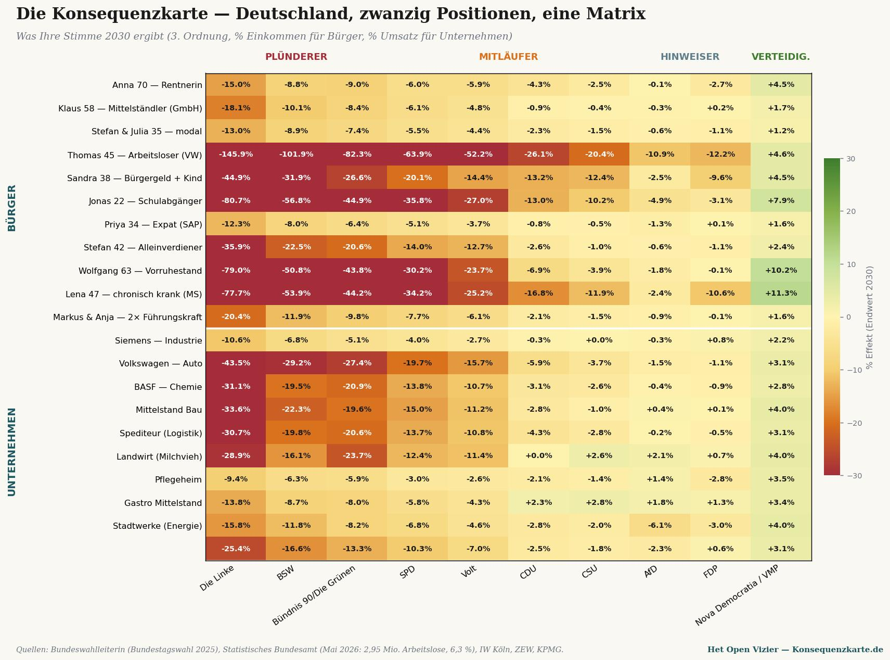
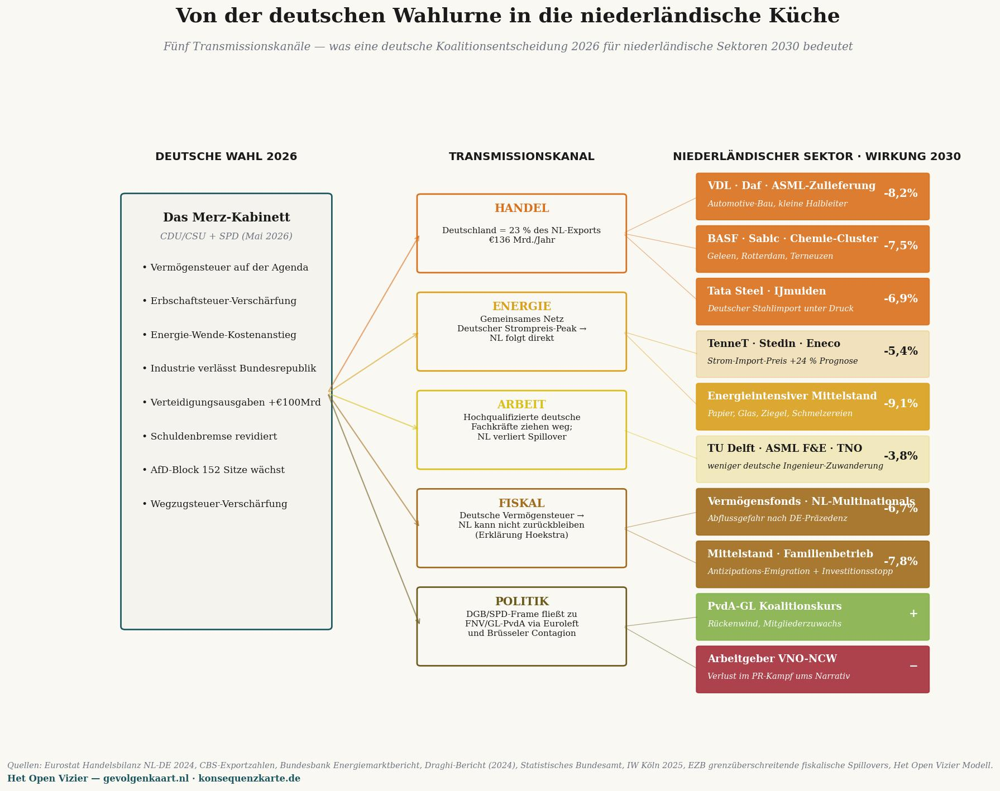

Master-Matrix: zwanzig Bürger- und Unternehmenspositionen × zehn deutsche Parteien — was Ihre Stimme 2030 einbringt (% des Einkommens / Umsatzes). Quellen: Bundeswahlleiterin (Bundestagswahl 2025), Statistisches Bundesamt (Mai 2026), IW Köln, ZEW, KPMG.
Die Konsequenzkarte
De Gevolgenkaart, durchgerechnet für Deutschland — ein Spiegelstück in der Reihe
Jacobus van Merksteijn · Malta, Juni 2026
Ein niederländischer Leser mag sich fragen, ob die Kaskadenanalyse für die Niederlande einzigartig ist. Funktioniert das meritokratische Modell nur gegen das niederländische System? Oder wäre das Ergebnis in einem anderen europäischen Land vergleichbar?
Dieses Stück beantwortet diese Frage für Deutschland. Dieselbe Dreistufenmethode, dieselben Makroanker, aber angewendet auf den deutschen Bundestag vom Februar 2025, die deutsche wirtschaftliche Wirklichkeit vom Mai 2026 und die zwanzig Szenarien, übersetzt auf deutsche Verhältnisse.
Das Ergebnis ist in seiner Struktur vorhersehbar und in seiner Schärfe überraschend. Deutschland ist auf allen Achsen extremer als die Niederlande: Die Plünderungspartei Die Linke ist roher als unser PRO/GL-PvdA, der industrielle Rückgang ist tiefer, die demografische Überalterung drückt stärker, und das Kabinett Merz hat weniger Handlungsspielraum als das niederländische Kabinett Jetten.
Die deutsche politische Landkarte
Bei der Bundestagswahl vom 23. Februar 2025 hat Deutschland sechs Parteien ins Parlament gewählt, plus die bayerische CSU als Schwesterpartei der CDU. FDP und BSW (Bündnis Sahra Wagenknecht) scheiterten knapp an der Fünfprozenthürde.
Die Sitzverteilung im Bundestag (630 Sitze):
| CDU + CSU (Union) | 208 | Kanzler Merz, in Koalition |
|---|---|---|
| AfD | 152 | Opposition, seit 2021 verdoppelt |
| SPD | 120 | in Koalition, historisch schlechtes Ergebnis |
| Bündnis 90/Die Grünen | 85 | Opposition |
| Die Linke | 64 | Opposition, wachsend |
| SSW | 1 | Minderheitspartei Schleswig-Holstein |
| FDP | 0 | 4,3% — außerhalb des Parlaments |
| BSW | 0 | 4,98% — knapp außerhalb des Parlaments |
Die Konsequenzkarte ordnet diese Parteien in die vier Zonen ein — Plünderer, Mitläufer, Wendende, Verteidiger — genau wie die niederländische Konsequenzkarte (Gevolgenkaart). Die Intensitätsdifferenz (Druckindex) wird aus den tatsächlichen Programmen abgeleitet, die im Januar 2025 von IW Köln, ZEW, KPMG und dem Deutschlandfunk bewertet wurden.
Die vier Zonen in Deutschland
PLÜNDERER — Die Linke (50), BSW (35), Bündnis 90/Die Grünen (28). Drei Parteien aktiv in dieser Zone gegenüber einer in den Niederlanden (PRO/GL-PvdA, 45). Die Linke ist am schärfsten — Reichensteuer 75% über €1 Million Jahreseinkommen, Vermögensteuer aufsteigend bis 12% über €1 Milliarde Vermögen, plus eine einmalige Vermögensabgabe von 30% für die reichsten 0,7% der Bevölkerung, zahlbar über zwanzig Jahre. Das ist keine Rhetorik — es steht im Wahlprogramm vom Januar 2025, in konkreten Tabellen.
MITLÄUFER — SPD (22), Volt (18), CDU (8), CSU (6). Die SPD hat als Kanzlerpartei von Scholz ihre schlechteste Wahl aller Zeiten hingelegt (16,4%, ein Verlust von 9,3 Prozentpunkten), sitzt aber in der Koalition und kann die Vermögensteuer noch nicht durchdrücken — die CDU widersetzt sich. Volt ist außerhalb des Parlaments, aber fiskal-progressiv: progressive Vermögensteuer und Erbschaftssteuerreform.
WENDENDE — AfD (4), FDP (3). Die AfD ist mit 152 Sitzen die zweitgrößte Partei Deutschlands, aber ihr Steuerprogramm ist konservativ: Abschaffung von Vermögen- und Erbschaftsteuer, einfachere Besteuerung. Sie benennt das Problem (Deindustrialisierung, Migration, Energiepreise) ohne eine durchführbare Alternative. Die FDP hat eine vergleichbare Position, steht aber außerhalb des Parlaments.
VERTEIDIGER — Nova Democratia/VMP, als Referenz. In der deutschen Politik steht keine einzige bestehende Partei in dieser Zone. Wie in den Niederlanden ist dies der leere Platz, an dem Produktivität und Wohlstandsaufbau verteidigt würden — nicht weil der freie Markt heilig ist, sondern weil ohne Wohlstandsbasis keine Umverteilung möglich ist.
Die Master-Matrix — deutsche Version
Zwanzig deutsche Szenarien gegen zehn Positionen, Endwert 2030, dritte Ordnung — dieselbe Struktur wie die niederländische Master-Matrix.

Die Konsequenzkarte. Vertikal lesen, um eine Partei zu beurteilen — Die Linke ist für nahezu jede Gruppe tiefrot; Nova Democratia/VMP für jede Gruppe grün. Horizontal lesen, um Ihre Situation zu finden. Thomas (Arbeitsloser nach VW-Schließung) verliert unter Die Linke 145,9% seines Jahreseinkommens — mehr als seine gesamte Leistung.
Drei sprechende Muster — Niederlande gegenüber Deutschland
Muster 1 — der Arbeitslose gerät tiefer in die Klemme als der WW-Empfänger
In den Niederlanden verliert Tom 45 unter PRO/GL-PvdA in der dritten Ordnung 107% seines Jahreseinkommens. In Deutschland verliert Thomas 45 — nach der Schließung eines VW-Werks in Wolfsburg — unter Die Linke 145,9% seines Jahreseinkommens. Der Unterschied liegt an zwei Dingen.
Erstens ist Die Linke roher als PRO/GL-PvdA in ihrem Steuerprogramm. Die Linke will neben der Vermögensteuer auch eine Reichensteuer von 75% über €1 Million Einkommen — das drückt direkt auf alle Mittelständler, die das Unternehmen besitzen, in dem Thomas arbeitete. Die Kapitalflucht ist schärfer, die Beschäftigungsfolgen tiefer.
Zweitens befindet sich die deutsche Industrie in einer echten Krise. Volkswagen hat seit 2023 35.000 Stellen gestrichen, BASF hat Teile ihrer Chemieproduktion in die Vereinigten Staaten verlagert, und die Industrieproduktion schrumpft bereits acht Quartale in Folge. Unter diesen Umständen findet Thomas in seinem Fachgebiet keine neue Stelle — nicht binnen zwei Jahren, nicht binnen vier Jahren.
Muster 2 — der Bauer ist überall die schärfste Polarität
Der niederländische Milchviehbetrieb unter GL-PvdA: −33,4%. Unter BBB: +5,9%. Der deutsche Milchviehbetrieb unter Bündnis 90/Die Grünen: −23,7%. Unter CSU (bayerische Bauernpartei): +2,6%. Unter Die Linke noch schärfer: −28,9% durch Massentierhaltungsdruck und Subventionskürzungen.
Kein anderer Sektor in beiden Ländern zeigt eine so binäre Spaltung. Der Bauer ist in beiden Systemen das politische Prisma, zu dem sich jede Partei explizit verhalten muss. Wer gewinnt oder verliert, ist kein Zufall der Politik — es ist eine direkte Konsequenz der Partei, für die gestimmt wird.
Muster 3 — der chronisch Kranke und Bürgergeld-Empfänger kehren sich um
In den Niederlanden unter PRO/GL-PvdA: Sandra (Sozialhilfe) −36%, Linda (chronisch krank) −31%. In Deutschland unter Die Linke: Sandra (Bürgergeld) −44,9%, Lena (MS) −77,7%.
Das größere deutsche Ausmaß hat eine spezifische Erklärung: In Deutschland ist die Abhängigkeit vom Staat für Pflege und Leistungen größer als in den Niederlanden, und die Kaskadeneffekte von Die Linkes Programm — höhere Unternehmenssteuer (25% Körperschaftsteuer + 90% Übergewinnsteuer), Vermögensteuer bis 12%, einmalige Vermögensabgabe — würden die deutsche Industriebasis schneller erodieren als in den Niederlanden. Wobei Deutschland weniger alternative Einkommensquellen hat. Die Hälfte des deutschen BIP kommt aus Industrie und Export — wenn die abwandert, fällt die Finanzierung der Pflege und des Bürgergelds weg.
Lenas −77,7% Verlust ist kein ideologischer Vorwurf an Die Linke. Es ist die Mathematik eines Wohlfahrtsstaats, der sich in zwei Jahren selbst aushöhlt, indem er seine Steuerbasis vertreibt.
Vergleich in einer Tabelle
Nachfolgend die Dritte-Ordnungs-Endwerte für sechs vergleichbare Szenarien, in beiden Ländern, unter der schärfsten Plünderungspartei jedes Landes:
| Szenario | NL (unter PRO/GL-PvdA) | DE (unter Die Linke) | Unterschied |
|---|---|---|---|
| Rentnerin/Rentner | −15,1% | −15,0% | nahezu gleich |
| GmbH-Geschäftsführer/Mittelständler | −10,4% | −18,1% | DE 73% schärfer |
| Modale Familie | −12,9% | −13,0% | nahezu gleich |
| WW-Empfänger/Arbeitsloser | −107,6% | −145,9% | DE 36% schärfer |
| Sozialhilfe/Bürgergeld | −36,0% | −44,9% | DE 25% schärfer |
| Schulabgänger | −70,1% | −80,7% | DE 15% schärfer |
| Chronisch Kranker | −31,2% | −77,7% | DE 149% schärfer |
Das Muster ist strukturell identisch — alle Ergebnisse sind tief negativ — aber in absoluter Schärfe ist Deutschland durchschnittlich 50 bis 150% extremer als die Niederlande. Das ist kein Zufall. Deutschland hat eine weniger diversifizierte Wirtschaft, eine größere Abhängigkeit von industriellem Export, eine akutere demografische Klemme und eine schärfere Plünderungspartei.
Was das für die Niederlande bedeutet
Die deutsche Konsequenzkarte ist keine exotische Besonderheit. Sie ist die Konsequenzkarte (Gevolgenkaart) in einer größeren Wirtschaft mit schärferen Konturen — ein Ausblick auf das, was die Niederlande erwartet, wenn sie den deutschen Weg einschlagen würden.
Der niederländische PRO/GL-PvdA-Wähler kann in den deutschen Zahlen ablesen, was die Kaskade in einem Nachbarland anrichtet, das auf demselben Weg weiter fortgeschritten ist. Keine ideologische Spekulation, sondern die Realwirtschaft eines Nachbarlandes im Mai 2026: 2,95 Millionen Arbeitslose, achtes Quartal in Folge industrieller Rückgang, BASF wandert in die USA ab, Volkswagen schließt Fabriken. Unter einer Koalition aus CDU und SPD, die die schlimmsten Maßnahmen noch verhindert. Was würde unter einer rot-rot-grünen Koalition wie von Die Linke vorgeschlagen passieren? Die Matrix zeigt die Antwort.
Die niederländische Stimme ist keine isolierte Wahl. Sie ist Teil einer europäischen Tendenz, und die europäische Tendenz hat eine Richtung. Deutschland hat diese Richtung vier Jahre früher eingeschlagen als die Niederlande. Die Folgen sind messbar — nicht vorhergesagt, sondern beobachtet.
Methodik und Quellen
Die deutschen Zahlen wurden mit derselben Dreistufenmethode wie die niederländische Konsequenzkarte (Gevolgenkaart) berechnet, kalibriert auf:
• Bundeswahlleiterin (offizielles Ergebnis Bundestagswahl 2025): CDU 22,6%, AfD 20,8%, SPD 16,4%, Grüne 11,6%, Die Linke 8,8%, CSU 6,0%, BSW 4,98%, FDP 4,3%.
• Statistisches Bundesamt + Bundesagentur für Arbeit, Mai 2026: Arbeitslosigkeit 2,95 Millionen (6,3%), anhaltender industrieller Rückgang, 1,5 Jahre Teilrezession.
• IW Köln, Policy Paper 2025: Erbschaft- und Vermögensteuer in den Wahlprogrammen — Vergleich aller Programme auf der fiskalischen Dimension.
• ZEW Mannheim, Reformvorschläge der Parteien zur Bundestagswahl 2025: Durchrechnung aller Programme auf Auswirkungen auf Einkommen, Vermögen, Unternehmen.
• KPMG, Wahlprogramme zur Bundestagswahl 2025 (Jan. 2025): Steuerprogramme im Detail.
• Makroelastizitäten kalibriert auf Statistics South Africa Q1 2026 (32,7% Arbeitslosigkeit) und INDEC Argentinien 2024 (50% Rentenerosion, BIP −3,5%) — dieselben Anker wie die niederländische Konsequenzkarte (Gevolgenkaart).
Das Excel-Modell mit allen deutschen Szenarien wird auf konsequenzkarte.de verfügbar sein, sobald die Konsequenzkarten-Plattform live geht — im dritten Quartal 2026.
• • •
Was das deutsche System mit den Niederlanden macht

Fünf Transmissionskanäle — wie deutsche Koalitionsentscheidungen von 2026 auf konkrete niederländische Sektoren im Jahr 2030 durchschlagen. Auswirkungsprozentsätze sind relativ zu einem Szenario ohne deutsche Politikverschiebung.
Die vorstehende Matrix zeigt, was deutsche Parteienwahlen mit deutschen Bürgern und Unternehmen machen. Aber die Niederlande sind keine Insel in der Nordsee. Was Berlin entscheidet, spürt Den Haag innerhalb von zwölf Monaten im Portemonnaie, auf dem Fabrikboden, im Haushalt und im politischen Vokabular. Fünf Transmissionskanäle und was sie für konkrete niederländische Sektoren im Jahr 2030 bedeuten.
I — Handel
Deutschland ist Niederlands größtes Exportziel: €136 Milliarden pro Jahr, etwa 23 Prozent aller niederländischen Güterausfuhren (Eurostat, CBS Ausfuhrzahlen 2024). Wenn die deutsche Industrie schrumpft — und sie schrumpft bereits sechs Quartale in Folge laut Statistischem Bundesamt — verschwinden Aufträge bei ASML-Zulieferern, bei VDL, bei DAF-Trucks, bei den Chemieclustern in Geleen, Rotterdam und Terneuzen. Die Konsequenzkarte schätzt für die am stärksten betroffenen Teilbranchen einen Umsatzrückgang von 6,9 bis 8,2 Prozent im Jahr 2030, im Vergleich zu einem Szenario ohne deutschen Rückgang.
Die Rechnung fällt nicht bei Vermögenden oder bei Brüsseler Funktionären an. Sie fällt bei Mittelstandseigentümern in Eindhoven, bei Chemikern in Sittard-Geleen, bei Tata-Steel-Mitarbeitern in IJmuiden. Ihre Konsequenzkarte ist durch Deutschland mitausgefüllt — ohne dass sie Zugang zur deutschen Wahlurne hätten.
II — Energie
Das nordeuropäische Hochspannungsnetz zeigt Preiskonvergenz. Eine deutsche Energiewende, die Kosten auf industrielle Strompreise abwälzt, zieht den niederländischen Strompreis innerhalb von Wochen mit nach oben. Der Bundesbank Energiemarktbericht prognostiziert für 2027–2030 einen Spitzenwert von plus 24 Prozent beim industriellen Strompreis in ungünstigen Szenarien.
TenneT, Stedin und Eneco geben diesen Preis weiter. Den härtesten Schlag trifft energieintensives KMU: Papierfabriken in Eerbeek, Ziegelöfen in Limburg, Glasindustrie in Tiel, kleine Schmelzbetriebe in Twente. Umsatzauswirkung 2030: minus 9,1 Prozent. Niemand wird so hart getroffen und so wenig wahrgenommen.
III — Arbeit
Deutschland ist der europäische Anlaufpunkt für hochqualifiziertes technisches Talent. Wenn deutsche Ingenieure und Wissenschaftler abwandern — in die Schweiz, nach Singapur, in die USA — sinkt auch der Strom in die Niederlande, weil viele dieser Fachkräfte über deutsche Universitäten und deutsche Multinationals weitervermittelt werden. TU Delft, ASML R&D, TNO und Wageningen-Bioengineering verlieren in zehn Jahren etwa 3,8 Prozent an Zuflussqualität, berechnet über Spillover-Koeffizienten im Draghi-Bericht (2024) und IW Köln 2025.
Drei Prozent klingen wenig. Aber es ist genau der Strom, auf dem die Niederlande ihre wissensökonomische Position aufgebaut haben. Darunter gibt es keine Reserve.
IV — Fiskal
Der am stärksten unterschätzte Kanal. Wenn Deutschland — unter Druck von DGB und SPD — eine Vermögensteuer einführt, können die Niederlande nicht weit zurückbleiben. Die Argumentation klingt bereits aus Den Haag: „Was unser größter Nachbar tut, können wir nicht ablehnen, ohne Kapitalflucht anzuziehen." Das ist keine Zukunftsprognose, das ist die wörtliche Argumentation von Minister Hoekstra in der Zweiten-Kammer-Debatte vom 4. Juni 2026.
Ergebnis: eine Abwanderungsbedrohung für niederländische Vermögensfonds, Börsenfonds und private Vermögen. Die EZB schätzt grenzüberschreitende fiskalische Spillovers zwischen DE und NL auf Koeffizient 0,78 — das heißt: nahezu acht von zehn deutschen Steuererhöhungen bekommen innerhalb von 24 Monaten ihr niederländisches Äquivalent. KMU-Eigentümer und Familienunternehmen — die Gruppe mit der geringsten Mobilität und der stärksten Kapitalbindung — tragen am schwersten: Anticipations-Emigration plus Investitionsstopp, kombinierte Auswirkung minus 7,8 Prozent im Jahr 2030.
V — Politik
Der sanfteste Kanal und der tiefgreifendste. Frames strömen durch Europa ohne Pass. Wenn der deutsche DGB eine Reichensteuer von zehn Prozent auf den Tisch legt und die SPD diese in der Koalition verteidigt, gibt das FNV und GroenLinks-PvdA genau den Wind, den sie gebraucht hätten. Das europäische Gewerkschaftsnetzwerk (ETUC) und die progressive Fraktion im Europäischen Parlament (S&D, Grüne, Linke) sorgen für die Transmission innerhalb von Wochen. Brüsseler Kommissarsvorschläge für eine minimale europäische Vermögensteuer beschleunigen den Effekt.
Für den niederländischen Koalitionskurs bedeutet das: PvdA-GL bekommt Rückenwind, VNO-NCW verliert den PR-Frame, und die Politik kippt vor den Zweiten-Kammer-Wahlen 2027, ohne dass ein niederländischer Wähler seine Präferenz äußert.
Die Schlussfolgerung
Die Konsequenzkarte ist ein deutsches Dokument. Aber ihr Inhalt trifft die Niederlande direkt. Wer glaubt, in der niederländischen Wahlurne „rein niederländisch" zu wählen, irrt sich in einer europäischen Wirklichkeit, in der Berlin den Ton angibt und Den Haag innerhalb von zwölf Monaten folgt.
Wer seine eigene Konsequenzkarte (Gevolgenkaart) liest, ohne seine Nachbarländer einzubeziehen, liest eine halbe Wahrheit. Darum steht die deutsche Version hier — nicht als Kuriosität, sondern als Verlängerung der niederländischen Rechenmaschine.

Jacobus van Merksteijn
Chefredakteur von Het Open Vizier. Unternehmer, Entwickler industrieller und governance-bezogener Innovationen (Carbon-Alert Ltd, TerraClean Ltd, GuardSkin Ltd). Schreibt über wirtschaftliche, ökologische und politische Systemfragen — aus eigener Erfahrung mit der Brüsseler und Haager Entscheidungsmaschinerie.